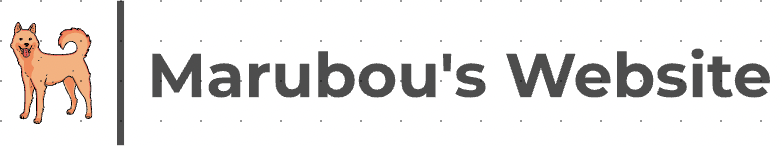

初めまして！色んなことに興味があり挑戦欲のあるオウジンです！！座右の名は、何事にも最後まで諦めずやりきろう です！
自身の卒業テーマは、教育分野における生徒に歴史を興味引き立たせるシステムを開発することです。 歴史は現状暗記科目だと捉えがちですが、実際は学ぶことが多く様々な場面で学んだ歴史知識が役立ちます。 なので、私は学び手が歴史に興味を持たせるため、歴史上人物の関連性を用いて歴史を学ぶ楽しみ方を自身が 開発したシステムを通して世に広めたいです。現時点では、今まで誰も挑戦したことのない歴史人物の関連性探しということもあってか苦戦はしつつも関連性を徐々に見つけ出してきています。
チーム6人構成でストーリー性のあるゲームを開発しています。ストーリーから始め、デザインや構築 プログラミングなど一通りのゲーム制作を担当しています。全員が自身の特性に合うタスクを振り分け 開発しています。自身は、企画設計に加えて開発を担当しています。(現在改良中) 参考URL : https://unityroom.com/games/wokutori_sama
大学の授業をきっかけにp5.jsによるデザイン表現やゲーム制作を学びました。自身が求めている 新しいイラストやゲームなどを作成し、いつか自身のオリジナル図形を開発したいです。
様々なWebサイト(サークル紹介やゲームサイトなど)を作成しています。企画設計(figma)から始まりデザイン(illustrator)を 用いてオリジナルイラストを作成し最終的にはWebサイトを作成しました。自身が立ち上げた サークルサイトを設立したり、長期インターン先でWebデザインやサイト作成を中高生に教えています。 写真をクリックすると、サイトに飛ぶことができます！ドメイン取得しています！
サークルを立ち上げた際に、周りに周知させるためにwebサイトを立ち上げると決意。サークルにあった
デザインに加えてキャラクター作成などをfigmaを通して作成した。周りの意見を取りえつつシンプルで
見えやすくできるように意識し作成した。初めてFigmaを使った日。
https://www.figma.com/file/QufUTBv18b5lwGlOa4hXFP/SKWIC_LA_%E3%83%AF%E3%82%A4%E3%
83%A4%E3%83%BC%E3%83%95%E3%83%AC%E3%83%BC%E3%83%A0